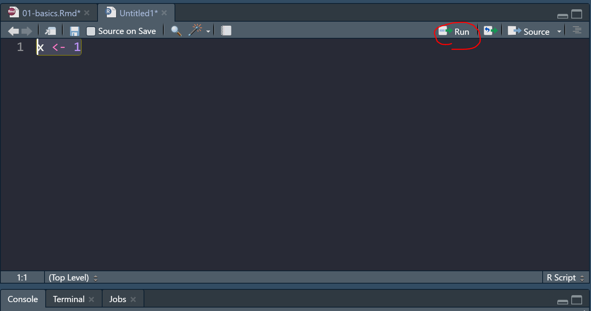
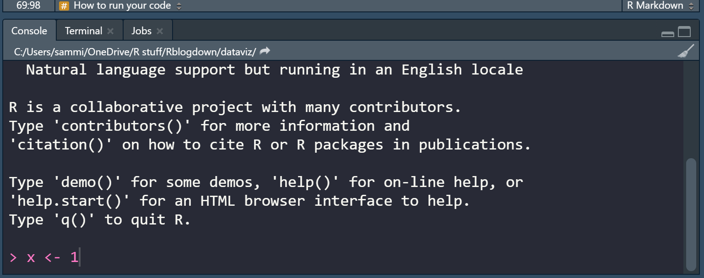

Chapter 2 Download RStudio & Basics of R
2.1 Setting up RStudio
Why use R for data visualization?
- R is free.
- Often, less codes are needed in R to plot an elegant graph.
- for/while loops (basic concepts in programming) are not necessary in R to make a production-quality graph.
- R is the best software for statistical analysis.
Other available resources for R
- Stack Overflow: https://www.stackoverflow.com
- R for Data Science (a bible for learning R): https://r4ds.had.co.nz/
- R documentation: https://www.rdocumentation.org
- Learn Statistics with R: https://learningstatisticswithr.com/
- ggplot2 (a reference for plotting data in R): https://ggplot2-book.org/
Download requirements for RStudio
- Download R: http://cran.r-project.org/
- For Mac users: Mac: XQuartz https://www.xquartz.org/
- RStudio: http://www.rstudio.org/
Open RStudio

Figure 2.1: Rstudio layout, image from http://www.sthda.com/english/wiki/running-rstudio-and-setting-up-your-working-directory-easy-r-programming
- Rstudio is where people do R programming.
- You can type codes (commands) into the console (bottom-left panel).
>means that the console is ready to receive more code.+means your code is not complete.
- You can also write (longer) codes in the script within the code editor (top-left panel).
- The code editor will run the script into the console.
- A new script can be opened by clicking: File -> New -> R Script.
- You can run a script by clicking ’Run” with the green arrow or by typing ctrl + enter. It is labeled with the red circle.
- Or you can just type your codes directly into the console.
Let’s make a folder and set it as working directory

Figure 2.2: Setting your working directory, image from https://www.ucl.ac.uk/~uctqiax/PUBLG100/2015/faq/setwd.html
- Create a folder named LearnR in Desktop.
- Set the folder as your working directory by clicking: Session -> Set Working Directory -> Choose Directory. Then find your LearnR folder.
- More information about setting up a directory is here: http://www.sthda.com/english/wiki/running-rstudio-and-setting-up-your-working-directory-easy-r-programming
- You will need set the directory every time you start RStudio.
2.1.1 How to run your code
You can run code in 2 ways.
First, you can type it in the script and run it after highlighting the codes you would like to run.

Figure 2.3: How to run your code - script
- Second, you can type your code directly in the console.

Figure 2.4: How to run your code - console
2.2 Basics of R
Let’s type some codes
- Capitalization, punctuations and brackets are all important.
' 'and" "mean the same.- However,
' "are not paired. So they will not work. =and<-mean equivalent.- I often use
<-.
- I often use
- Type
?when you are not sure about the code (ex.?t.test) - A code becomes comment when it is preceded by
#.- Try typing
# g = 3and see if the number gets stored in g by typing g in the console.
- Try typing
x = 3 # x equals to 3
a <- 4 # a equals to 4
d <- 'Group' # gr is equal to a character 'Group', which is not a number.
e <- "Group"
d == e # 'Group' and "Group" are equal## [1] TRUE# g = 3 # its a comment- Notice that I used
==to test if d and e are equal. Therefore,==and=mean different.==tests if two things are equal.=sets two things to be equal.d == ereturnsTRUEbecause they are both'Group'.TRUEis equivalent to 1 numerically.
- Now let’s check if x and a are equal.
x == a## [1] FALSEIt returns
FALSEbecause x and a are not equal. This is correct because 3 and 4 are not equal.FALSEequals to 0 numerically.Below are more examples showing that
TRUE= 1 andFALSE= 0.
TRUE + FALSE # 1 + 0## [1] 1TRUE + TRUE # 1 + 1## [1] 2FALSE + FALSE # 0 + 0## [1] 0TRUE*2 # 1 * 2## [1] 2TRUE*FALSE # 1 * 0## [1] 0How can I learn most effectively with the notes?
- Don’t just read it.
- Don’t just copy and paste the codes and run them in RStudio (ctrl + c & ctrl + p). Make sure you type each code.
- You can also change your code and see if it still works.
- If you are not sure of your code, you can type
?before the function. - If you are still not sure after reading the notes, check out Chapter 3 of R for Data Science: https://r4ds.had.co.nz/
More installation
- R is an old programming language.
- So, people, such as statisticians and programmers, have created more functions in R in the form of the package to update the language. They are free but they have to be downloaded separately.
- A package can contain several functions.
- In this tutorial, you will mainly be using ggplot2 package, which is elegant and flexible for visualizing data.
- Also, you will be using smplot2 package. It improves ggplot2 graphs visually.
- So, you will need to install some packages, such as ggplot2 and smplot2. Please type the codes below.
install.packages('devtools')
devtools::install_github('smin95/smplot2', force = TRUE) # requires VPN if you are in China- You only need to install them once, but you will need to reload them whenever you start a new session in RStudio using the function
library().
install.packages('tidyverse') # only need to install once
install.packages('cowplot')# packages must be loaded every time by using library() when you run your script
library(tidyverse) # it has ggplot2 package
library(cowplot) # it allows you to save figures in .png file
library(smplot2)- Now let’s make some graphs in the subsequent chapters.